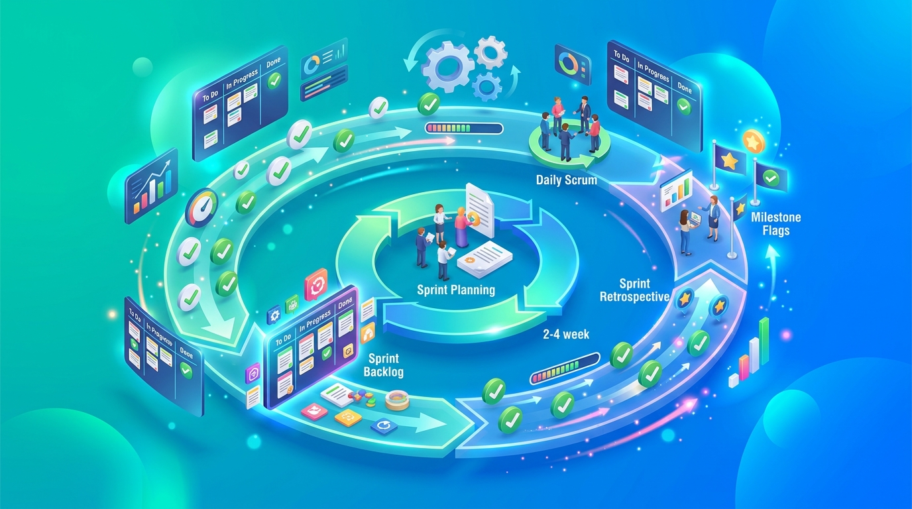
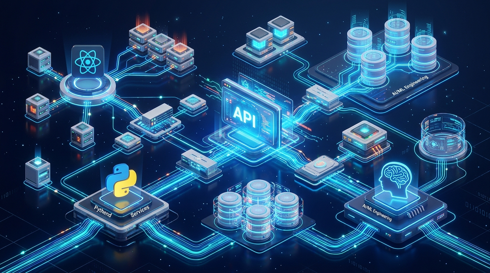
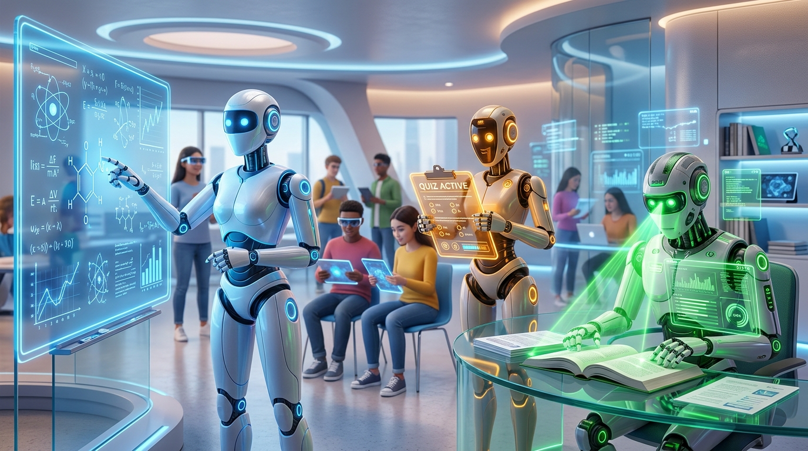
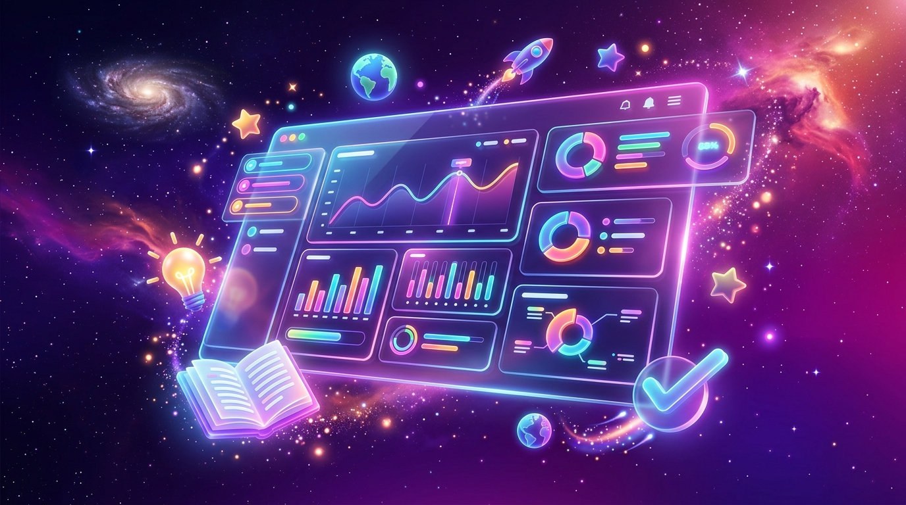

Your Personal AI Tutor — Learn Smarter
An AI-Powered Adaptive Tutoring Platform for Personalized Learning, Automated Content Processing, and Intelligent Assessment Generation
Pre-Defense Presentation
Bachelor of Science in Information Technology • Academic Year 2025–2026
A comprehensive walkthrough of Knowrizon's development journey
Understanding the challenges that motivated Knowrizon
The research seeks to address the following questions
How can an AI platform provide personalized, context-aware tutoring that adapts to individual student needs?
How can automated content processing transform uploaded materials into structured educational resources?
How can intelligent assessment generation produce diverse quizzes with immediate explanatory feedback?
How can a unified platform integrate AI tutoring, assessment, analytics, and social learning?
To develop Knowrizon — an AI-powered adaptive tutoring platform
Iterative development with continuous feedback and incremental delivery

Four focused sprints delivering incremental, testable functionality
Modern, production-grade technologies for performance and scalability

Client-server architecture with clear separation of concerns
Three specialized agents powered by Nebius AI with JSON-configurable prompts
Context-aware explanations with Socratic questioning
Challenging assessments with concept tagging
Extracts information from PDFs, images, videos

12 integrated features powering a comprehensive learning platform
Collaborative features that connect learners in real time
The scale and scope of the Knowrizon platform

Continuous evaluation with key findings from each sprint
Serverless architecture on Vercel with Supabase PostgreSQL
Key insights from the iterative development process
Knowrizon demonstrates the viability of AI-powered adaptive tutoring
We are now open for questions and feedback
Knowrizon AI — Learn Smarter